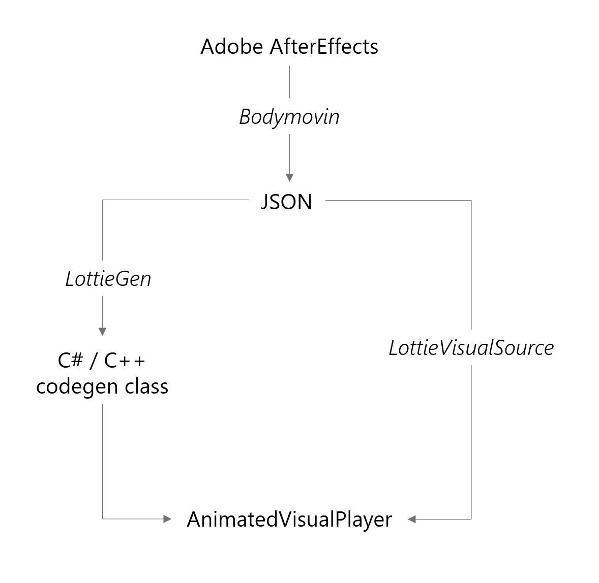

Getting Started
Previewing Lottie JSON Files
Use the Lottie Viewer application to test the visual accuracy of your Lottie animations and identify potential issues. Simply use drag-and-drop or use a file-picker to open local JSON files and URIs. A warning icon may light up to indicate any issues with your animation.


Using JSON
To get started with Lottie-Windows, you will require:
- Windows 10 SDK version 1809 (17763) or above
- Microsoft.UI.Xaml nuget package which contains the AnimatedVisualPlayer XAML element
- Microsoft.Toolkit.Uwp.UI.Lottie nuget package which produces a LottieVisualSource
xmlns:lottie="using:Microsoft.Toolkit.Uwp.UI.Lottie"
xmlns:winui="using:Microsoft.UI.Xaml.Controls"
You can now bring high-quality, resolution-independent vector animations to your Windows applications with just a couple of lines of XAML:
<!-- AnimatedVisualPlayer with AutoPlay -->
<winui:AnimatedVisualPlayer x:Name="LottiePlayer">
<!-- LottieVisualSource that parses a JSON Uri at run-time -->
<lottie:LottieVisualSource UriSource="ms-appx:///AnimatedVisuals/LottieLogo1.json" />
</winui:AnimatedVisualPlayer>
For detailed steps and code samples for getting started with a JSON file, check out this tutorial.
Using Codegen
In addition to using JSON files, Lottie-Windows allows you to use generated C# / C++ classes for better performance by avoiding the cost of parsing and translating JSON files at run-time. You may generate the code by using:
Having generated your C# or C++ class, you'll need to configure your AnimatedVisualPlayer to consume it:
<!-- AnimatedVisualPlayer with AutoPlay -->
<winui:AnimatedVisualPlayer x:Name="LottiePlayer">
<!-- Codegen source with C# class: AnimatedVisuals/LottieLogo1.cs -->
<animatedvisuals:LottieLogo1 />
</winui:AnimatedVisualPlayer>
For detailed steps and code samples for using codegen in lieu of JSON, check out this tutorial.
JSON versus Codegen
Both approaches — JSON and Codegen — produce the same visual results but have different tradeoffs and workflows; to decide which is best suited for your application, check out this comparison. Here's how all the pieces fit together:
